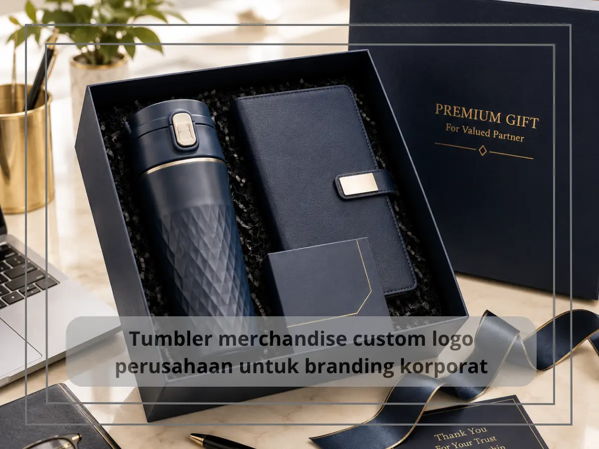
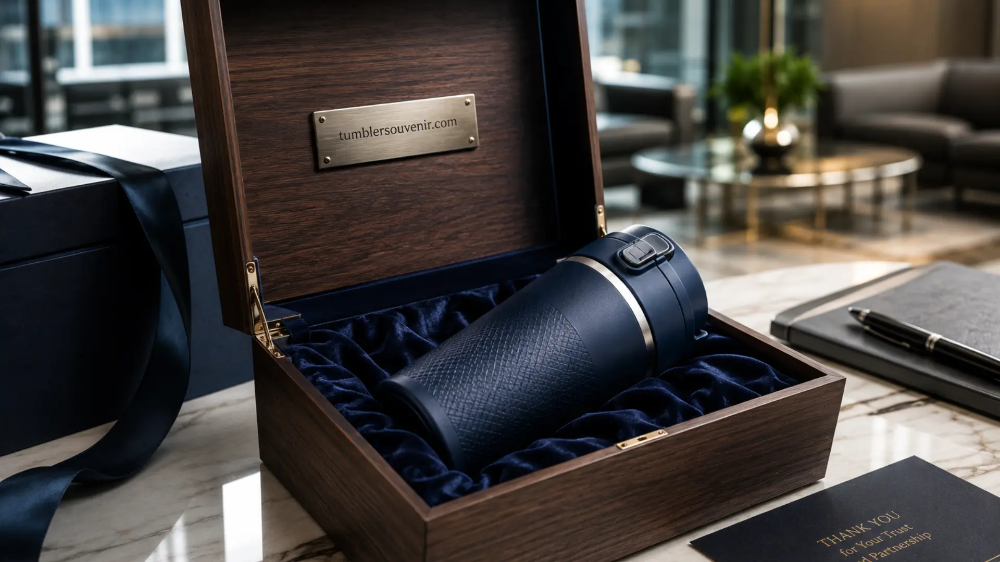

Tumbler Merchandise yang Cocok untuk Branding dan Promosi
Ringkasan
Tumbler merchandise adalah tumbler custom berlogo yang dirancang khusus sebagai media branding dan promosi perusahaan. Produk ini efektif meningkatkan visibilitas brand karena dipakai berulang kali oleh karyawan, klien, maupun mitra bisnis dalam aktivitas harian.
- Tumbler merchandise memberikan eksposur brand yang berkelanjutan karena dipakai setiap hari.
- Biaya per impresi tumbler custom relatif lebih efisien dibanding banyak media iklan konvensional.
- Desain tumbler dapat disesuaikan penuh dengan identitas visual perusahaan.
- Tumbler cocok untuk berbagai acara: gathering, seminar, corporate gift, hingga onboarding karyawan.
- Pemilihan material dan finishing memengaruhi persepsi kualitas brand di mata penerima.
Daftar Isi
- Apa Itu Tumbler Merchandise dan Mengapa Penting untuk Branding?
- Mengapa Tumbler Lebih Efektif Dibanding Merchandise Promosi Lainnya?
- Bagaimana Cara Memilih Tumbler Merchandise yang Tepat untuk Perusahaan?
- Kapan Waktu yang Tepat Menggunakan Tumbler Merchandise untuk Promosi?
- Apa Saja Kesalahan Umum dalam Memilih Tumbler Merchandise Perusahaan?
Apa Itu Tumbler Merchandise dan Mengapa Penting untuk Branding?
Tumbler merchandise adalah tumbler custom yang dicetak atau diukir dengan logo dan identitas visual perusahaan untuk tujuan branding jangka panjang. Produk ini berfungsi sebagai media promosi yang aktif digunakan penerimanya, bukan sekadar dipajang atau disimpan.
Berbeda dengan media iklan konvensional yang hanya dilihat sekilas, tumbler merchandise menempel dalam rutinitas harian penerima. Karyawan membawanya ke kantor, klien menggunakannya di rumah, dan mitra bisnis memperlihatkannya di berbagai kesempatan. Setiap penggunaan tersebut menjadi momen eksposur brand yang berulang tanpa biaya tambahan.
Menurut studi industri promotional products dari Advertising Specialty Institute periode 2023-2024, mayoritas penerima merchandise fungsional seperti tumbler dapat mengingat nama brand pengirim setelah menggunakannya secara rutin. Data ini menegaskan bahwa tumbler bukan sekadar hadiah, melainkan investasi komunikasi brand yang terukur.
Mengapa Tumbler Lebih Efektif Dibanding Merchandise Promosi Lainnya?
Tumbler lebih efektif dibanding merchandise lain karena frekuensi pemakaiannya tinggi, daya tahannya panjang, dan relevansinya universal untuk semua kalangan usia dan profesi. Faktor-faktor ini membuat tumbler unggul dari segi rasio biaya terhadap eksposur brand.

Beberapa merchandise seperti pulpen atau gantungan kunci memiliki masa pakai singkat dan mudah hilang. Tumbler, sebaliknya, merupakan barang yang secara sengaja dipilih penerimanya untuk dipakai bertahun-tahun, terutama jika kualitas materialnya baik. Riset industri promotional products juga mencatat bahwa merchandise dengan fungsi harian seperti tumbler dan tas memiliki tingkat retensi ingatan brand yang lebih tinggi dibanding merchandise dekoratif.
Tumbler juga fleksibel digunakan lintas segmen: karyawan kantor, peserta seminar, klien korporat, hingga tamu undangan acara perusahaan. Fleksibilitas ini menjadikan tumbler pilihan aman untuk berbagai kebutuhan procurement, mulai dari corporate gift tahunan hingga goodie bag event.
Bagaimana Cara Memilih Tumbler Merchandise yang Tepat untuk Perusahaan?
Cara memilih tumbler merchandise yang tepat adalah dengan menyesuaikan material, kapasitas, teknik cetak logo, dan anggaran dengan tujuan branding serta target penerima produk. Setiap elemen ini menentukan seberapa kuat kesan brand yang tersampaikan.
Material tumbler memengaruhi persepsi kualitas brand. Stainless steel double wall memberikan kesan premium dan tahan lama, cocok untuk klien VIP atau corporate gift eksekutif. Material yang lebih ringan dan ekonomis cocok untuk distribusi massal seperti goodie bag seminar atau merchandise karyawan dalam jumlah besar.
Teknik cetak logo juga menentukan daya tahan branding. Ukiran laser dan sablon UV umumnya lebih tahan lama dibanding stiker atau cetak digital biasa, sehingga logo tetap jelas terbaca meski tumbler sering dicuci dan digunakan setiap hari.
Anggaran perusahaan sebaiknya disesuaikan dengan jumlah pemesanan dan tujuan distribusi. Pemesanan dalam skala besar umumnya memberikan efisiensi biaya per unit yang lebih baik, sehingga cocok untuk kebutuhan merchandise tahunan maupun program loyalitas karyawan.
Kapan Waktu yang Tepat Menggunakan Tumbler Merchandise untuk Promosi?
Waktu yang tepat menggunakan tumbler merchandise adalah saat perusahaan menyelenggarakan event korporat, meluncurkan kampanye branding baru, atau ingin memperkuat loyalitas karyawan dan klien melalui corporate gift yang bermakna.
Momen-momen strategis seperti gathering tahunan, seminar, peluncuran produk, hingga perayaan hari jadi perusahaan menjadi kesempatan ideal untuk mendistribusikan tumbler custom. Pada momen tersebut, tumbler tidak hanya berfungsi sebagai souvenir, tetapi juga sebagai representasi identitas brand yang dibawa pulang oleh setiap peserta.
Selain event, program apresiasi karyawan dan corporate gift untuk mitra bisnis di akhir tahun juga menjadi momen populer. Pemberian tumbler pada momen tersebut memperkuat hubungan emosional penerima dengan brand, sekaligus menjadi pengingat visual yang konsisten muncul dalam aktivitas kerja sehari-hari.
Apa Saja Kesalahan Umum dalam Memilih Tumbler Merchandise Perusahaan?
Kesalahan umum dalam memilih tumbler merchandise adalah mengutamakan harga murah tanpa mempertimbangkan kualitas material, desain logo yang terlalu ramai, serta tidak menyesuaikan produk dengan karakter penerima.
Harga murah dengan kualitas material yang buruk berisiko membuat tumbler cepat rusak, sehingga logo perusahaan justru diasosiasikan dengan produk yang tidak awet. Desain logo yang terlalu ramai atau ukuran cetak yang tidak proporsional juga dapat mengurangi kesan profesional, alih-alih memperkuat identitas brand.
Kesalahan lain yang sering terjadi adalah tidak menyesuaikan jenis tumbler dengan penerima. Tumbler kasual mungkin kurang tepat untuk corporate gift eksekutif, sementara tumbler premium bisa jadi berlebihan untuk distribusi massal karyawan. Penyesuaian ini penting agar merchandise terasa relevan dan tepat sasaran.
Tumbler merchandise merupakan investasi branding yang efisien karena memberikan eksposur brand berkelanjutan melalui pemakaian harian. Pemilihan material, teknik cetak, dan penyesuaian dengan target penerima menjadi kunci keberhasilan strategi ini.
Perusahaan yang ingin memperkuat identitas brand secara konsisten dapat mempercayakan kebutuhan tumbler custom kepada tumblersouvenir.com, yang menyediakan berbagai pilihan material dan desain sesuai kebutuhan korporat.
Jika perusahaan Anda sedang mencari solusi merchandise yang tepat guna dan berkesan, tumblersouvenir.com siap membantu mewujudkan tumbler custom dengan kualitas premium dan proses pemesanan yang mudah. Konsultasikan kebutuhan branding perusahaan Anda sekarang melalui tumblersouvenir.com.